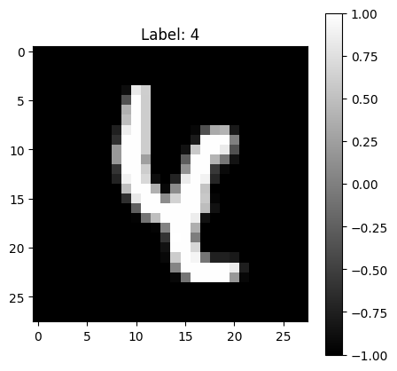
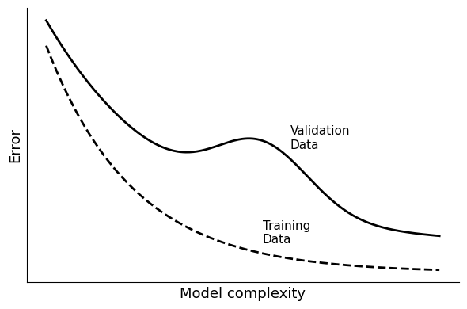

from torch import nn
from torch.utils.data import DataLoader
from torchvision import transforms
import datetime
import matplotlib.pyplot as plt
import numpy as np
import random
import torch
import torch.nn.functional as F
import torchvision
random.seed(123)
# Location of the data files. Adjust this path if you keep the data
# files in a different directory.
from pathlib import Path
DATA_DIR = Path('../data')Chapter 9: Deep Learning
- 2019-2026 Peter C. Bruce, Andrew Bruce, Peter Gedeck
Deep Learning
CNNs
Putting It All Together: An Example
transform = transforms.Compose([
transforms.ToTensor(),
transforms.Normalize((0.5,), (0.5,)),
])
trainset = torchvision.datasets.MNIST(root="./data", train=True,
download=True, transform=transform)
trainloader = DataLoader(trainset, batch_size=64, shuffle=True)
testset = torchvision.datasets.MNIST(root="./data", train=False,
download=True, transform=transform)
testloader = DataLoader(testset, batch_size=64, shuffle=False)sample_image, label = testset[160]
image_np = sample_image.squeeze()
fig, ax = plt.subplots(figsize=(5, 5))
img = ax.imshow(image_np, cmap="gray")
fig.colorbar(img, ax=ax)
ax.set_title(f"Label: {label}")
plt.show()
device = torch.device(
"cuda" if torch.cuda.is_available() else
"mps" if torch.backends.mps.is_available() else
"cpu")
model = nn.Sequential(
# low-level feature extractor:
# 1 channel, 32 filters, filter size 3x3, padding to keep image same size
# conv1: 320 parameters [32x(1x3x3 + 1)]
nn.Conv2d(1, 32, kernel_size=3, padding=1),
nn.ReLU(),
nn.MaxPool2d(2, 2), # pool1: 28x28 -> 14x14
# mid-level feature extractor: edges -> shapes
# conv2: 18,496 parameters [64x(32x3x3 + 1)]
nn.Conv2d(32, 64, kernel_size=3, padding=1),
nn.ReLU(),
nn.MaxPool2d(2, 2), # pool2: 14x14 -> 7x7
# high-level feature extractor: shapes -> objects
# conv3: 73,856 parameters [128x(64x3x3 + 1)]
nn.Conv2d(64, 128, kernel_size=3, padding=1),
nn.ReLU(),
nn.AdaptiveAvgPool2d(1), # GAP: 7x7 -> 1x1
nn.Flatten(), # create 128 long vector
nn.Linear(128, 10), # 1,290 parameters [128x10 + 1]; map to 10 class scores
).to(device)
criterion = nn.CrossEntropyLoss()
optimizer = torch.optim.Adam(model.parameters(), lr=0.001)def train_one_epoch(model, dataloader, optimizer, criterion):
model.train()
running_loss = 0.0
for images, labels in dataloader:
images, labels = images.to(device), labels.to(device)
optimizer.zero_grad()
outputs = model(images)
loss = criterion(outputs, labels)
loss.backward()
optimizer.step()
running_loss += loss.item()
return running_loss / len(dataloader)@torch.no_grad()
def evaluate(model, dataloader):
model.eval()
correct = 0
total = 0
for images, labels in dataloader:
images, labels = images.to(device), labels.to(device)
logits = model(images)
_, predicted = torch.max(logits, 1)
total += labels.size(0)
correct += (predicted == labels).sum().item()
return 100 * correct / totalseed = 1010
random.seed(seed)
np.random.seed(seed)
torch.manual_seed(seed)
num_epochs = 5
for epoch in range(num_epochs):
avg_loss = train_one_epoch(model, trainloader, optimizer, criterion)
accuracy = evaluate(model, testloader)
print(
f"Epoch [{epoch+1}/{num_epochs}] "
f"Loss: {avg_loss:.4f} "
f"Test Accuracy: {accuracy:.2f}%"
)Epoch [1/5] Loss: 0.5420 Test Accuracy: 95.14%
Epoch [2/5] Loss: 0.1521 Test Accuracy: 95.04%
Epoch [3/5] Loss: 0.1075 Test Accuracy: 97.29%
Epoch [4/5] Loss: 0.0826 Test Accuracy: 97.98%
Epoch [5/5] Loss: 0.0668 Test Accuracy: 97.87%@torch.no_grad()
def predict(model, image_tensor):
"""Run inference on a single image."""
model.eval()
logits = model(image_tensor.unsqueeze(0).to(device))
probs = torch.softmax(logits, dim=1).squeeze().cpu().numpy()
pred = int(probs.argmax())
return pred, probs
pred, probs = predict(model, sample_image)
print(f"Predicted class: {pred} Actual class: {label}")
print(", ".join([f"{p:.3f}" for p in probs.tolist()]))Predicted class: 6 Actual class: 4
0.000, 0.014, 0.000, 0.000, 0.190, 0.000, 0.791, 0.000, 0.004, 0.000Transformers
Revisiting the MNIST Image Classification Example
device = torch.device(
"cuda" if torch.cuda.is_available() else
"mps" if torch.backends.mps.is_available() else
"cpu")
IMG_SIZE = 28
PATCH_SIZE = 4
IN_CHANNELS = 1
NUM_CLASSES = 10 # ten digits (0-9)
EMBED_DIM = 64 # every token is a vector of 64
NUM_HEADS = 4 # number of attention heads running in parallel
NUM_LAYERS = 3 # number of transformer layers
MLP_DIM = 128
DROPOUT = 0.1 # during TRAINING randomly set 10% of values to zeroclass VisionTransformer(nn.Module):
def __init__(self, img_size=IMG_SIZE, patch_size=PATCH_SIZE,
in_channels=IN_CHANNELS, num_classes=NUM_CLASSES,
embed_dim=EMBED_DIM, num_heads=NUM_HEADS,
num_layers=NUM_LAYERS, mlp_dim=MLP_DIM,
dropout=DROPOUT):
super().__init__()
# ── Patch Projection ──
self.patch_projection = nn.Conv2d(
in_channels, embed_dim,
kernel_size=patch_size, stride=patch_size)
num_patches = (img_size // patch_size) ** 2
# ── Learnable Tokens & Positional Encoding ──
self.cls_token = nn.Parameter(torch.zeros(1, 1, embed_dim))
self.pos_embedding = nn.Parameter(
torch.zeros(1, num_patches + 1, embed_dim))
self._reset_parameters()
self.dropout = nn.Dropout(dropout)
# ── Transformer Encoder ──
encoder_layer = nn.TransformerEncoderLayer(
d_model=embed_dim,
nhead=num_heads,
dim_feedforward=mlp_dim,
dropout=dropout,
batch_first=True,
activation="gelu",
)
self.transformer = nn.TransformerEncoder(
encoder_layer, num_layers=num_layers)
# ── Norm Layer ──
self.norm = nn.LayerNorm(embed_dim)
# ── MLP Layer for Classification ──
self.mlp_head = nn.Sequential(nn.Linear(embed_dim, mlp_dim), nn.GELU(),
nn.Dropout(dropout), nn.Linear(mlp_dim, num_classes))
def _reset_parameters(self):
nn.init.trunc_normal_(self.cls_token, std=0.02)
nn.init.trunc_normal_(self.pos_embedding, std=0.02)
def forward(self, images):
B = images.shape[0]
# ── Step 1–2: Extract patches and project to embed_dim
# (B, 1, 28, 28) → (B, 64, 7, 7) → (B, 49, 64)
x = self.patch_projection(images) # (B, EMBED_DIM, 7, 7)
x = x.flatten(2).transpose(1, 2) # (B, NUM_PATCHES, EMBED_DIM)
# ── Step 3: Prepend CLS token ──
# (B, 49, 64) → (B, 50, 64)
cls_tokens = self.cls_token.expand(B, -1, -1)
x = torch.cat([cls_tokens, x], dim=1)
# ── Step 4: Add positional encoding
x = x + self.pos_embedding
x = self.dropout(x)
# ── Step 5: Transformer encoder ──
x = self.transformer(x)
# ── Step 6: CLS token → MLP head ──
cls_output = self.norm(x[:, 0]) # (B, 64)
return self.mlp_head(cls_output) # (B, 10)
model = VisionTransformer().to(device)print(f"Total Parameters: {sum(p.numel() for p in model.parameters()):>8,}")Total Parameters: 114,506optimizer = torch.optim.Adam(model.parameters(), lr=0.001)
criterion = nn.CrossEntropyLoss()
num_epochs = 5
for epoch in range(num_epochs):
avg_loss = train_one_epoch(model, trainloader, optimizer, criterion)
accuracy = evaluate(model, testloader)
print(
f"Epoch [{epoch+1}/{num_epochs}] "
f"Loss: {avg_loss:.4f} "
f"Test Accuracy: {accuracy:.2f}%"
)Epoch [1/5] Loss: 0.8533 Test Accuracy: 92.06%
Epoch [2/5] Loss: 0.2677 Test Accuracy: 95.36%
Epoch [3/5] Loss: 0.1886 Test Accuracy: 96.41%
Epoch [4/5] Loss: 0.1510 Test Accuracy: 96.51%
Epoch [5/5] Loss: 0.1296 Test Accuracy: 97.13%sample_image, label = testset[160]
pred, probs = predict(model, sample_image)
print(f"Predicted class: {pred} Actual class: {label}")
print(", ".join([f"{p:.3f}" for p in probs.tolist()]))Predicted class: 4 Actual class: 4
0.000, 0.001, 0.000, 0.000, 0.976, 0.000, 0.005, 0.009, 0.006, 0.002Supplementary Material
complexity = np.linspace(0, 100, 300)
def training_curve(x):
return 0.9 * np.exp(-0.045 * x) + 0.05
def validation_curve(x):
base = 0.9 * np.exp(-0.03 * x) + 0.15
bump = 0.25 * np.exp(-((x - 55) ** 2) / (2 * 12**2))
return base + bump
validation = validation_curve(complexity)
training = training_curve(complexity)
fig, ax = plt.subplots(figsize=(6, 4))
ax.plot(complexity, training, color="black", linewidth=2, label="Training Data", ls="--")
ax.plot(complexity, validation, color="black", linewidth=2, label="Validation Data")
ax.text(62, validation_curve(62) + 0.04, "Validation\nData", fontsize=11)
ax.text(55, training_curve(55) + 0.04, "Training\nData", fontsize=11)
ax.spines["top"].set_visible(False)
ax.spines["right"].set_visible(False)
ax.set_xticks([])
ax.set_yticks([])
ax.set_xlabel("Model complexity", fontsize=13)
ax.set_ylabel("Error", fontsize=13)
plt.tight_layout()
plt.show()